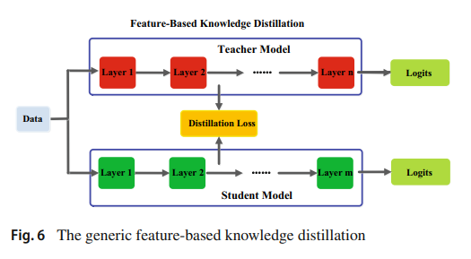

import torch
import torch.nn as nn
import torch.nn.functional as F
import torch.backends.cudnn as cudnn
from torchvision import datasets, transforms
import torch.optim as optim
from torchsummary import summary
import matplotlib.pyplot as plt
from tqdm.auto import tqdm
import os
import numpy as np
import time
from IPython.display import clear_outputFeature-Based Knowledge Distillation

Distillation Loss = 모델의 중간 층의 출력인 Attention map을 MSE Loss를 통해 비교한 Loss 2개 + student model의 Cross entropy Loss 1개
Teacher Model(ResNet 18 + SE Block)과 Student Model(CNN with 3 Layers + SE Block)은 사전에 학습을 시킨 후 불러왔음
Knowledge Distillation을 위한 준비
Model 정의
class SEBlock(nn.Module):
def __init__(self, in_channels, reduction_ratio=16):
super(SEBlock, self).__init__()
self.pool = nn.AdaptiveAvgPool2d(1)
self.fc1 = nn.Linear(in_channels, in_channels // reduction_ratio)
self.fc2 = nn.Linear(in_channels // reduction_ratio, in_channels)
def forward(self, x):
b, c, h, w = x.size()
out = self.pool(x).view(b, c)
out = F.relu(self.fc1(out))
out = torch.sigmoid(self.fc2(out)).view(b, c, 1, 1)
out = out.expand(b, c, h, w)
return out
class BasicBlock(nn.Module):
def __init__(self, in_planes, planes, stride = 1):
super(BasicBlock, self).__init__()
self.conv1 = nn.Conv2d(in_planes, planes,kernel_size=3,padding=1, stride = stride, bias = False)
self.bn1 = nn.BatchNorm2d(planes)
self.conv2 = nn.Conv2d(planes, planes, kernel_size=3,padding=1, stride = 1, bias = False)
self.bn2 = nn.BatchNorm2d(planes)
self.se = SEBlock(planes)
self.shortcut = nn.Sequential()
if stride != 1: # stride가 1이 아니면 image shape이 변형됨 # stride가 1이면 그냥 패스
self.shortcut = nn.Sequential(
nn.Conv2d(in_planes, planes, kernel_size=3, padding=1,stride= stride, bias = False),
nn.BatchNorm2d(planes)
)
def forward(self, x):
output = F.relu(self.bn1(self.conv1(x)))
output = self.bn2(self.conv2(output))
output = self.se(output) * output
# skip connection
output += self.shortcut(x)
output = F.relu(output)
return output
class ResNet(nn.Module):
def __init__(self, block, num_blocks, num_classes = 10):
super(ResNet, self).__init__()
self.in_planes = 64
self.conv1 = nn.Conv2d(3, 64, kernel_size=3, stride=1, padding=1, bias=False)
self.bn1 = nn.BatchNorm2d(64)
self.layer1 = self._make_layer(block, 64, num_blocks[0], stride=1)
self.layer2 = self._make_layer(block, 128, num_blocks[1], stride=2)
self.layer3 = self._make_layer(block, 256, num_blocks[2], stride=2)
self.layer4 = self._make_layer(block, 512, num_blocks[3], stride=2)
self.linear = nn.Linear(512, num_classes)
def _make_layer(self, block, planes, num_blocks, stride):
strides = [stride] + [1]*(num_blocks - 1) # stride = 1 -> strides = [1,1] # stride = 2 -> strides = [2,1]
layers = []
for stride in strides:
layers.append(block(self.in_planes, planes, stride))
self.in_planes = planes
return nn.Sequential(*layers)
def forward(self, x):
output = F.relu(self.bn1(self.conv1(x))) # 채널수만 바뀜
output = self.layer1(output) #
output = self.layer2(output)
output = self.layer3(output)
output = self.layer4(output)
output = F.avg_pool2d(output, 4) # img shape 1/4
output = output.view(output.size(0), -1) # FC Layer
output = self.linear(output) # img shape = [batch size, num_classes]
return output
def get_features1(self, x):
output = F.relu(self.bn1(self.conv1(x)))
output = self.layer1(output)
output = self.layer2(output)# 16, 16
output = self.layer3(output)# 8, 8
output = torch.sum(output,1)
output = output.view(output.size(0),-1)
return output
def get_features2(self, x):
output = F.relu(self.bn1(self.conv1(x)))
output = self.layer1(output)
output = self.layer2(output) # 16,16
output = self.layer3(output) # 8, 8
output = self.layer4(output) # 4, 4
output = torch.sum(output,1)
output = output.view(output.size(0), -1) # FC Layer
return output
def ResNet18():
return ResNet(BasicBlock, [2,2,2,2])
class student_CNN(nn.Module):
def __init__(self):
super(student_CNN, self).__init__()
self.layer1 = nn.Sequential(
nn.Conv2d(3, 64, kernel_size=3, stride=2, padding=1, bias=False),
nn.BatchNorm2d(64)
)
self.se1 = SEBlock(64)
self.layer2 = nn.Sequential(
nn.Conv2d(64, 64, kernel_size=3, stride=2, padding=1, bias=False),
nn.BatchNorm2d(64)
)
self.se2 = SEBlock(64)
self.layer3 = nn.Sequential(
nn.Conv2d(64, 128, kernel_size=3, stride=2, padding=1, bias=False),
nn.BatchNorm2d(128)
)
self.se3 = SEBlock(128)
self.linear = nn.Linear(512, 10)
def forward(self, x):
output = F.relu(self.layer1(x))
output = self.se1(output) * output # 64,16,16 = 16384
output = F.relu(self.layer2(output))
output = self.se2(output) * output # 64,8,8 = 4096
output = F.relu(self.layer3(output))
output = self.se3(output) * output # 128,4,4 = 2048
output = F.avg_pool2d(output, 2)
output = output.view(output.size(0),-1)
output = self.linear(output)
return output
def get_features1(self, x):
output = F.relu(self.layer1(x)) # 16,16
output = self.se1(output) * output
output = F.relu(self.layer2(output))
output = self.se2(output) * output
output = torch.sum(output,1)
output = output.view(output.size(0),-1)
return output
def get_features2(self, x):
output = F.relu(self.layer1(x)) # 16,16
output = self.se1(output)* output
output = F.relu(self.layer2(output)) # 8,8
output = self.se2(output) * output
output = F.relu(self.layer3(output)) # 4,4
output = self.se3(output) * output
output = torch.sum(output,1)
output = output.view(output.size(0),-1)
return outputtransform_train = transforms.Compose([
transforms.RandomCrop(32, padding=4),
transforms.RandomHorizontalFlip(),
transforms.ToTensor(),
])
transform_test = transforms.Compose([
transforms.ToTensor(),
])
train_data = datasets.CIFAR10('./data', train=True, download=True,transform=transform_train)
test_data = datasets.CIFAR10('./data', train=False, download=True,transform=transform_test)
train_loader = torch.utils.data.DataLoader(dataset = train_data, batch_size= 128, shuffle=True)
test_loader = torch.utils.data.DataLoader(dataset = test_data, batch_size= 100, shuffle=True)Files already downloaded and verified
Files already downloaded and verifiedTeacher, Student model 불러오기
T_model = ResNet18()
T_model.load_state_dict(torch.load('teacher_CNN_parm.pth'))<All keys matched successfully>S_model = student_CNN()
S_model.load_state_dict(torch.load('student_CNN_parm.pth'))<All keys matched successfully>Teacher, Student model 정확도 확인
T_model.eval()
device = torch.device("cuda:0" if torch.cuda.is_available() else "cpu")
T_model = T_model.to(device)
T_acc = []
with torch.no_grad():
for batch_idx, (x,y) in enumerate(test_loader):
x, y = x.to(device), y.to(device)
yhat = T_model(x)
y_pred = np.argmax(yhat.detach().to('cpu'), axis=1)
T_acc.append((y_pred == y.to('cpu')).sum().item() / len(y))
print("Teacher model acc: {:.4f}".format(sum(T_acc)/len(T_acc)))Teacher model acc: 0.9140S_model.eval()
device = torch.device("cuda:0" if torch.cuda.is_available() else "cpu")
S_model = S_model.to(device)
T_acc = []
for batch_idx, (x,y) in enumerate(test_loader):
x, y = x.to(device), y.to(device)
yhat = S_model(x)
y_pred = np.argmax(yhat.detach().to('cpu'), axis=1)
T_acc.append((y_pred == y.to('cpu')).sum().item() / len(y))
print("student model acc without distillation: {:.4f}".format(sum(T_acc)/len(T_acc)))student model acc without distillation: 0.7668Knowledge Distillation Loss with MSE Loss(attention map)
아래와 같은 실험을 통해 적절한 loss 가중치를 찾음
T_model.eval()
S_model1.eval()
loss_fn1 = nn.MSELoss()
loss_fn2 = nn.CrossEntropyLoss()
with torch.no_grad():
for batch_idx, (x, target) in tqdm(enumerate(train_loader)):
x, target = x.to(device), target.to(device)
target = F.one_hot(target.to(torch.int64), num_classes = 10)
# attention map 1 loss 계산
teacher_fm1 = T_model.get_features1(x)
student_fm1 = S_model1.get_features1(x)
loss1 = loss_fn1(student_fm1, teacher_fm1)
# attention map 2 loss 계산
teacher_fm2 = T_model.get_features2(x)
student_fm2 = S_model1.get_features2(x)
loss2 = loss_fn1(student_fm2, teacher_fm2)
# Cross entropy loss 계산
student_pred = S_model1(x)
loss3 = loss_fn2(student_pred.float(), target.float())
print(loss1,loss2*0.1,loss3*1000)
breakdef Distillation_train(T_model, S_model, train_loader, test_loader, epochs, lr = 0.001):
device = torch.device("cuda:0" if torch.cuda.is_available() else "cpu")
batch_size = 128
T_model = T_model.to(device)
S_model = S_model.to(device)
optimizr = optim.Adam(S_model.parameters(), lr= lr)
loss_fn1 = nn.MSELoss()
loss_fn2 = nn.CrossEntropyLoss()
train_loss = []
for epch in range(epochs):
epch += 1
t_epoch_start = time.time()
epch_loss = 0.0
val_epch_loss = 0.0
# 모델 학습
T_model.eval()
S_model.train()
for batch_idx, (x, target) in tqdm(enumerate(train_loader)):
x, target = x.to(device), target.to(device)
target = F.one_hot(target.to(torch.int64), num_classes = 10)
# attention map 1 loss 계산
teacher_fm1 = T_model.get_features1(x)
student_fm1 = S_model.get_features1(x)
loss1 = loss_fn1(student_fm1, teacher_fm1)
# attention map 2 loss 계산
teacher_fm2 = T_model.get_features2(x)
student_fm2 = S_model.get_features2(x)
loss2 = loss_fn1(student_fm2, teacher_fm2)
# Cross entropy loss 계산
student_pred = S_model(x)
loss3 = loss_fn2(student_pred.float(), target.float())
# loss sum
loss = loss1 + loss2*0.1 + loss3*10000
optimizr.zero_grad()
loss.requires_grad_(True)
loss.backward()
optimizr.step()
epch_loss += loss.item()
# 모델 검증
S_model.eval()
T_acc = []
with torch.no_grad():
for batch_idx, (x,y) in enumerate(test_loader):
x, y = x.to(device), y.to(device)
yhat = S_model(x)
y_pred = np.argmax(yhat.detach().to('cpu'), axis=1)
T_acc.append((y_pred == y.to('cpu')).sum().item() / len(y))
# 모델 결과 확인
t_epoch_finish = time.time()
train_loss.append(epch_loss / batch_size)
if epch%5==0:
clear_output(wait = True)
print('Epoch: {}, Train_Loss: {:4f}, Test acc: {:4f}, Epoch_time: {:.4f}'.format(epch, epch_loss, sum(T_acc)/len(T_acc), t_epoch_finish - t_epoch_start))torch.manual_seed(0)
torch.cuda.manual_seed(0)
torch.cuda.manual_seed_all(0)
S_model1 = student_CNN()
Distillation_train(T_model, S_model1, train_loader, test_loader, epochs= 50)torch.save(obj = S_model1.state_dict(), f= 'student_dist_CNN.pth')Distllation model 불러오기 및 성능 확인
S_model1 = student_CNN()
S_model1.load_state_dict(torch.load('student_dist_CNN.pth'))<All keys matched successfully>S_model1.eval()
device = torch.device("cuda:0" if torch.cuda.is_available() else "cpu")
S_model1 = S_model1.to(device)
T_acc = []
with torch.no_grad():
for batch_idx, (x,y) in enumerate(test_loader):
x, y = x.to(device), y.to(device)
yhat = S_model1(x)
y_pred = np.argmax(yhat.detach().to('cpu'), axis=1)
T_acc.append((y_pred == y.to('cpu')).sum().item() / len(y))
print("student model acc with distillation: {:.4f}".format(sum(T_acc)/len(T_acc)))student model acc with distillation: 0.7768| Model | Accuracy | Distillation |
|---|---|---|
| Teacher | 91.40% | x |
| Student | 76.68% | x |
| Student | 77.68% | o |